1. The first time we met
Lost in Translation

A beautiful film about feeling lost within a new world. Obviously, we didn’t know what was to come between us but I found myself falling in love with this film the way I fell in love with you. The way the two meet and slowly build up to the relationship is something I love in a movie. And definitely something I’d like to associate with the first time we met. It kind of feels like dominoes falling in place. We simply just met in class yet everything after was slow, confusing and sometimes tiring, like this film lol. It was a “slow-burn” if you wanted to put a name to it.
2. Our group project
Booksmart

Booksmart was such a funny and interesting film. To be honest with you, I kind of only chose this movie because of the title but it is genuinely a great watch. I’m pretty sure you’ve watched this but it’s basically like the gen z version of Superbad. This was the first group project I had in my very first university class and I was very much terrified. In some way, I relate to the two main characters, I wanted to show that I was something more than just work. I also very much relate to the character Amy but for different reasons…
3. Falling asleep on the train
The Room
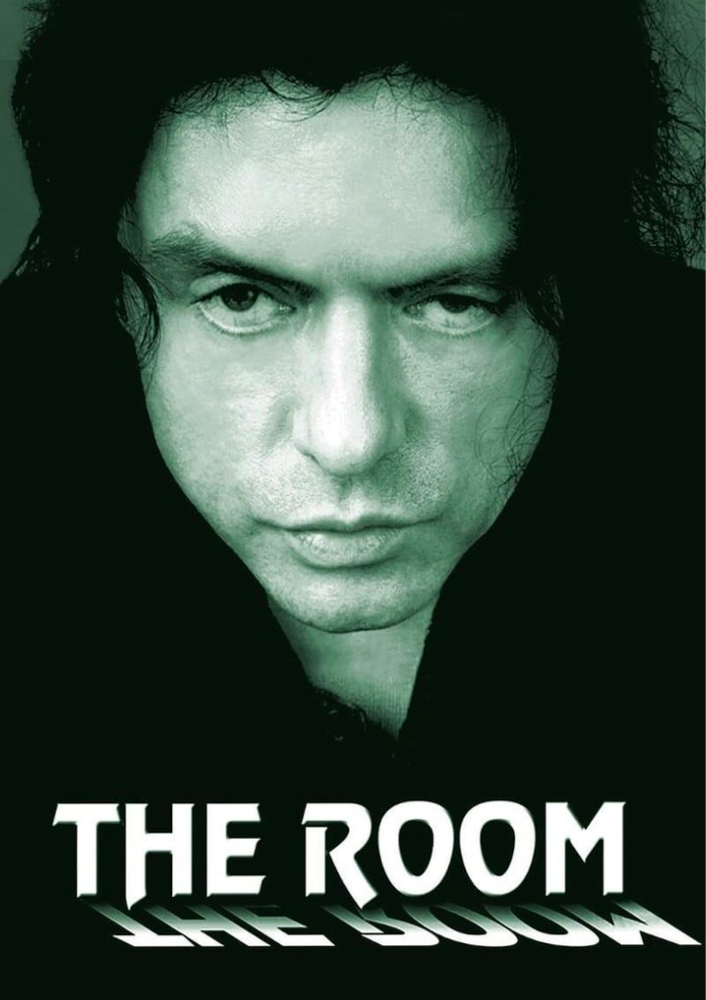ALL AROUND CRINGEY. I actually have not watched The Room in its entirety. Just like how I cannot think about this moment without cringing. I did, however, enjoy The Disaster Artist.
4. Chatting till 4 am
Kiss Kiss Bang Bang
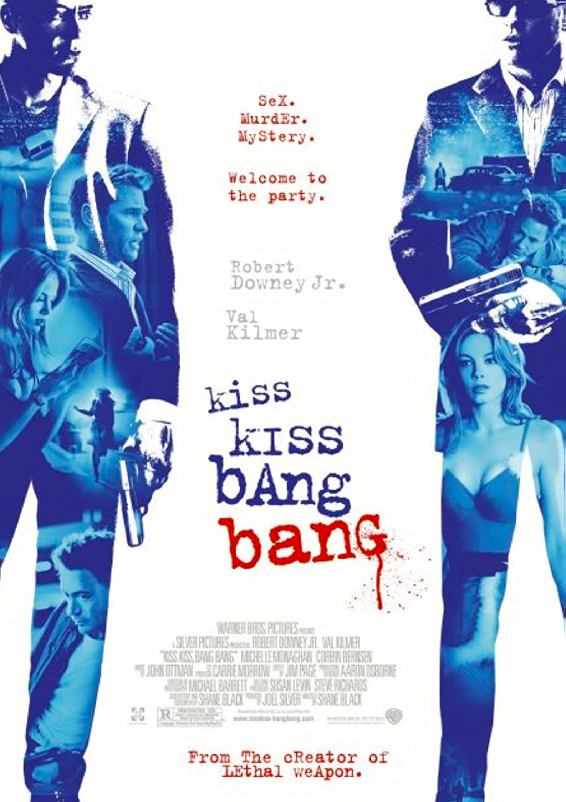Mystery. Action. Iron Man and… boobs lol
Truly when I heard you had watched this, I knew we had a lot more to talk about. This film was my gate-way drug into the world of neo-noir films like Chinatown, Brick and the Knives Out series. The film is all around a good watch, such a funny and compelling story. It is a slay.
5. The Confession
500 Days of Summer
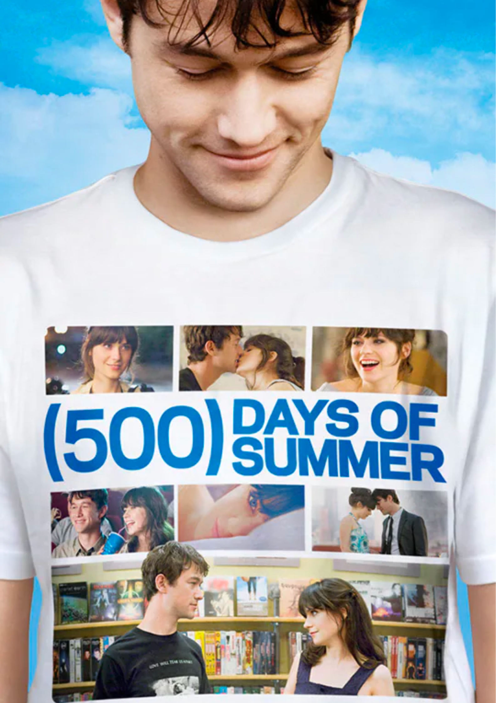Okay SO. Let me preface that this is not a very great comparison. In fact, this is a red flag comparison. However, I don’t know why but during this time, I was reminded of this film. The way in which we shared similar interests. I thought that this film was pretty. Very idealistic but pretty. The way Tom thought was very peculiar but he wished for the best. I felt like the beginning of relationships are often like this. When everything is unknown, scary and quite frankly, annoying (will they end up together???). Luckily, this idealism does not last long and I began to get to know you for who you are :)
6. Vivian asks out Gabe
Hereditary
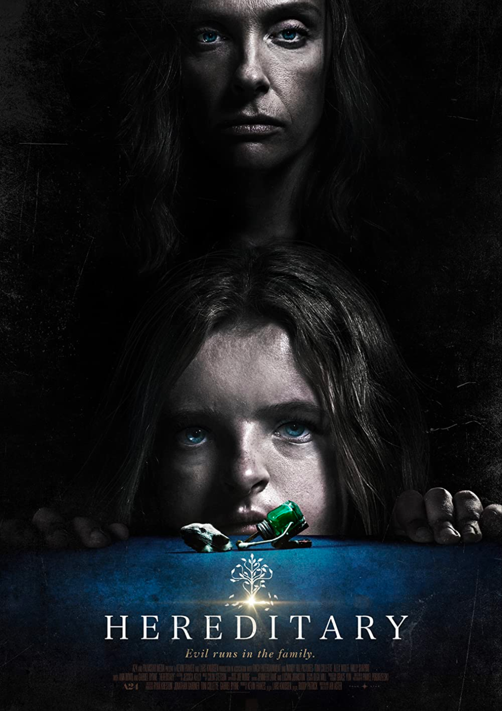Very terrifying. I literally felt sick watching this. Just like how I felt when I asked you out! No but seriously, some scenes in this movie made me gag. I really like Ari Aster as a director but damn, he knows how to make a haunting film.
7. Just Kidding
Amelie
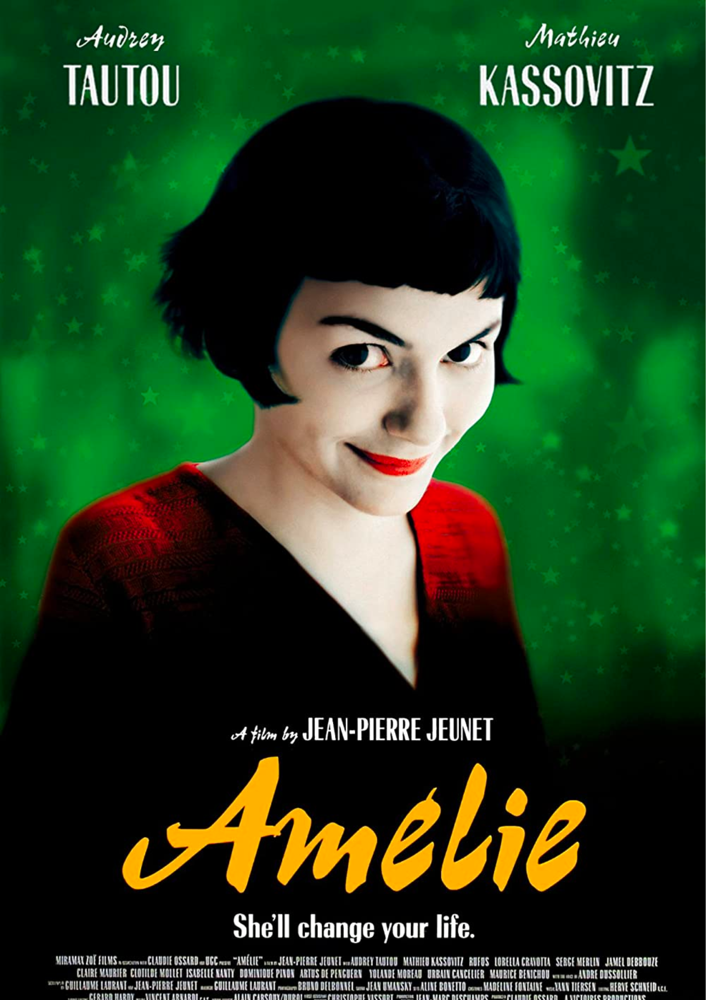
Just kidding!!
But anyways, I love this movie. It makes me very happy :) A beautiful story about love at its purest form. Amelie takes charge and curates a whimsical adventure for her love interest. Now, I was only able to realise my mistakes after you told me. I still cannot believe that you thought I had rejected you. I’m just shy…
I hold a special place in my heart for Amelie. She is the original quirky girl. She quite literally is different and that’s what makes her story so fantastical.
8. The Wollongong Trip
The Lobster
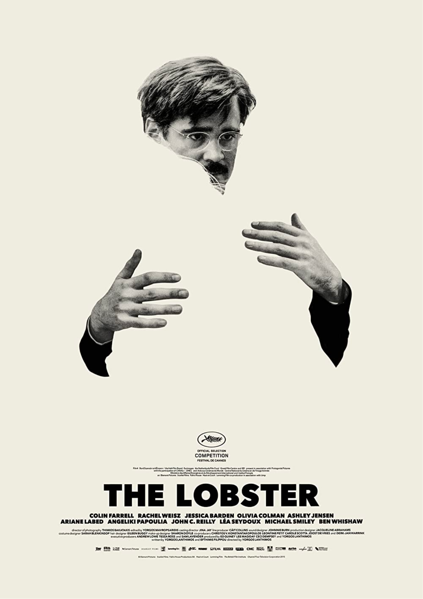So, this doesn’t really fit in with this section but I remember that I had just watched this film before going on our trip. A dark and ‘black mirror’-esque film that follows the pursuit of love. It’s gory, emotional and made me never want to use a dating app or do whatever they were doing. I loved the cinematography, it was very blue and stale which I felt fit well with the film’s context.
8. and more...
Howl's Moving Castle
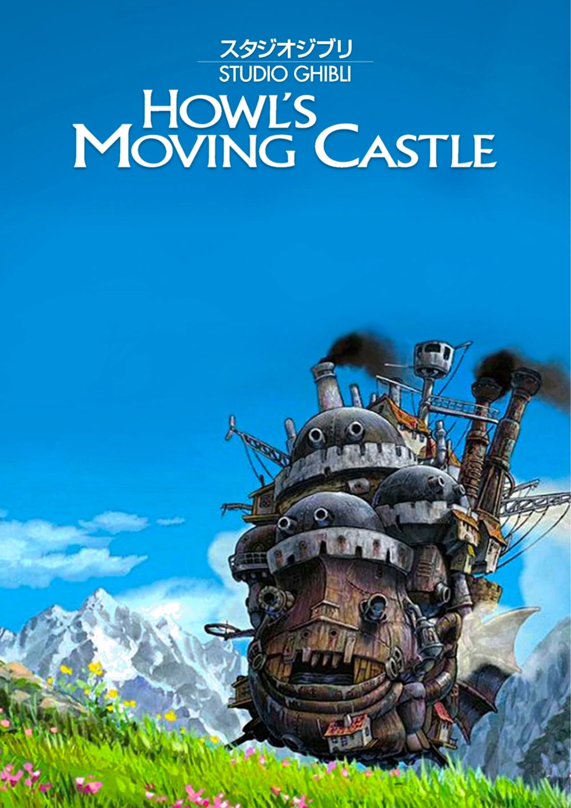The Wollongong drive was very peaceful, much like all of Miyazaki’s films. I specifically chose Howl’s Moving Castle as there was such beautiful scenery throughout the whole film. Maybe I'm looking back at that day with foggy lenses but it was really pretty. I really enjoy exploring places with you. Just sitting and watching everything made that day one I’ll never forget.
9. Settling in
Shirkers
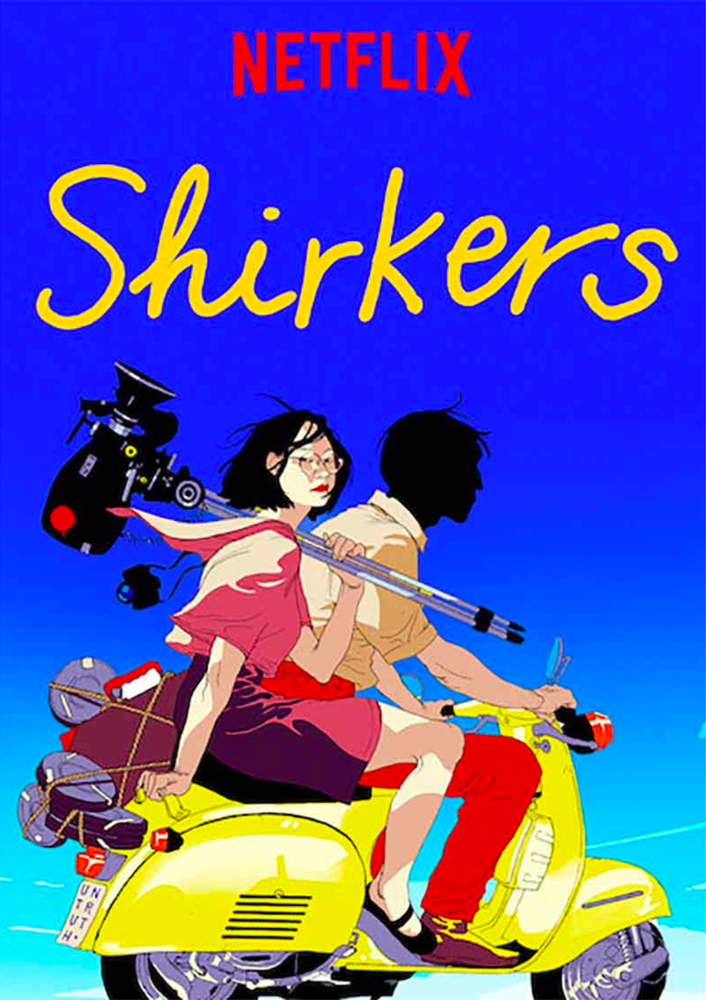A slightly different type of movie genre ~ Shirkers is a dreamy documentary about longing and searching for meaning within the past. The mood of this documentary is whimsical and deeply intriguing. When I think of comfort films, I think of the tale this movie tells. I believe it’s still on Netflix, I highly recommend it!!
9. + One
City of Stars
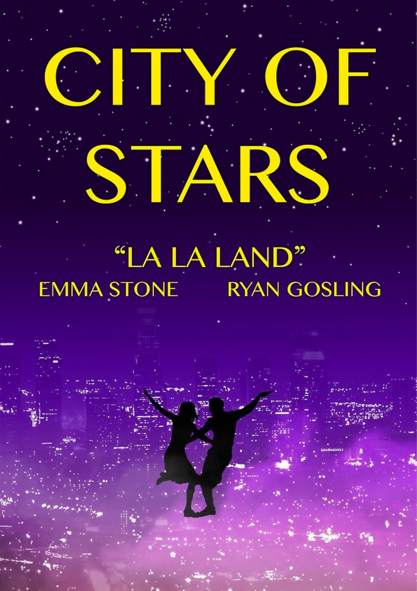Another pretty film with easy-to-sing karaoke songs hehe. I am quite saddened by the ending but I love the setting and tempo of the movie itself. Again, this is one of my comfort movies and I feel it fits perfectly with ‘settling in’.
10. The Queens Memorial Day
Juno
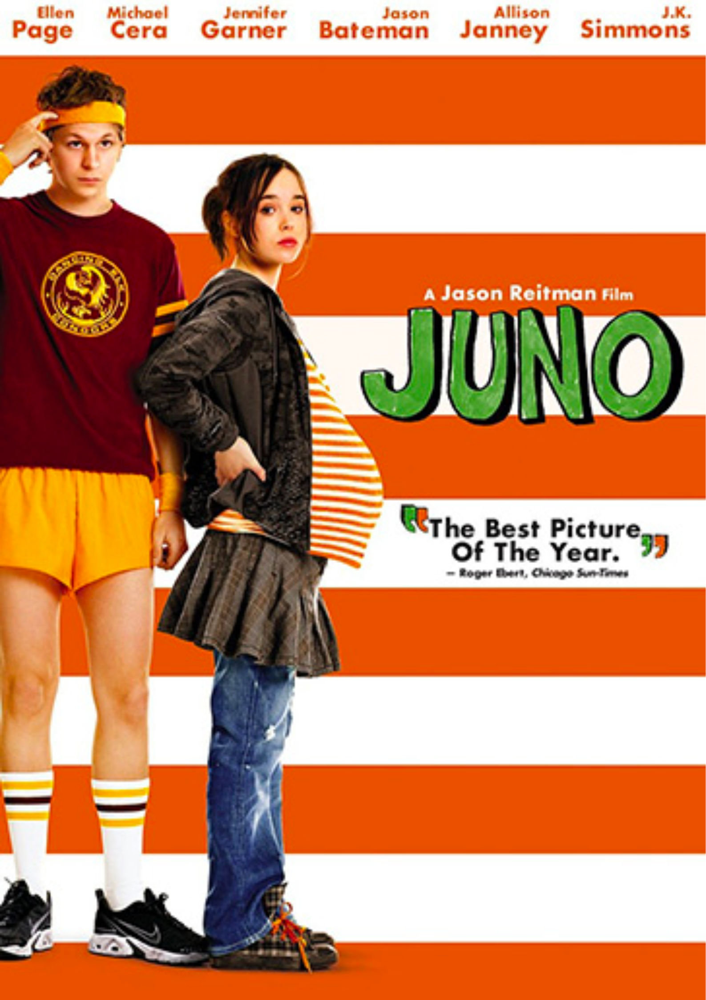Meme category but Juno is very much quirky and a bit stupid with her choices. But, if I compared myself to Juno then you would be Michael Cera. I honestly think that that cosplay could work really well. What an interesting day HA
11. The Quiet Days
In Mood for Love
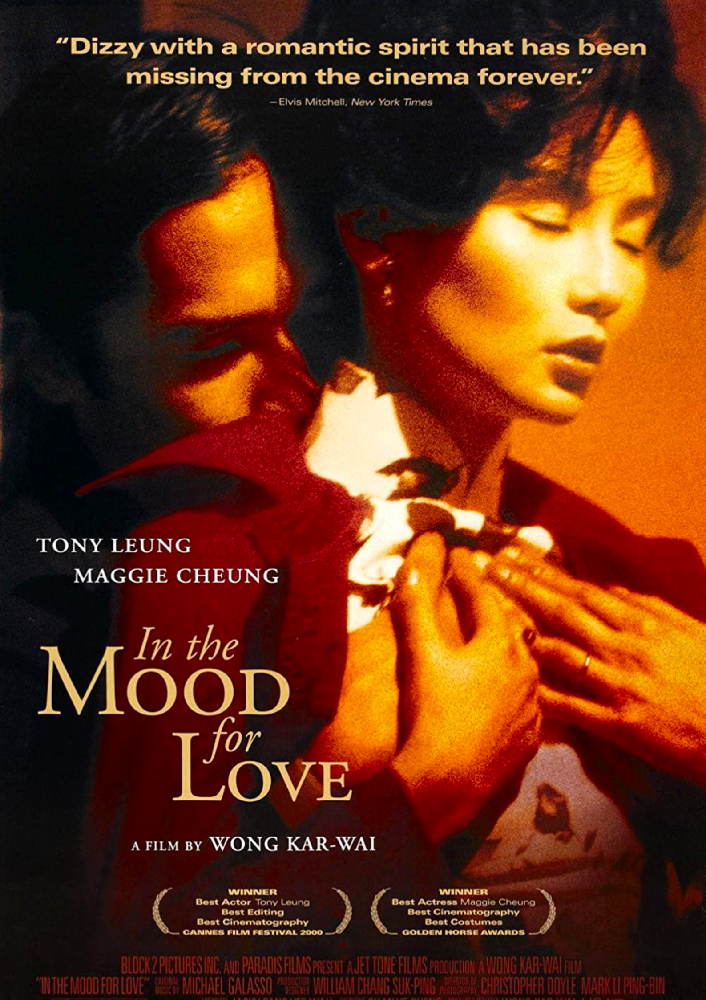The quiet days are what we make of them. I’d come over to your house or vice versa and we’d just eat and hang out, watching movies and doing other stuff. I associate quiet days with quiet movies. Something that leaves things up to interpretation. In The Mood For Love is an ode to quietness. The dark streets of Hong Kong, the background chatter of people, the gestures of longing. Truly one of my favourite movies of all time!
11. Again
Her
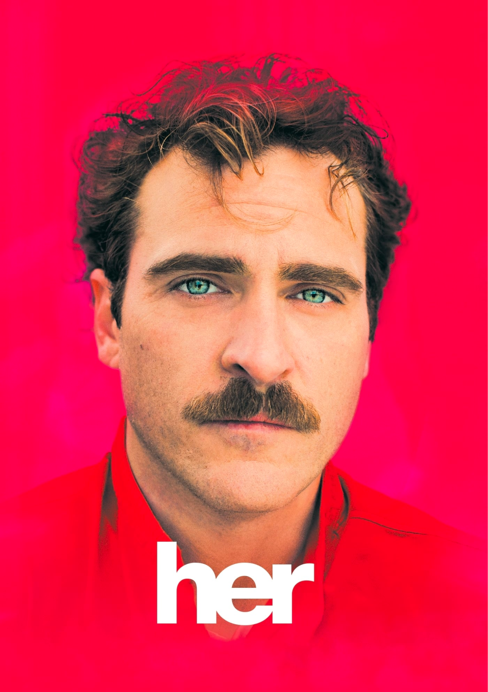Her has that same dreamy exterior. I know that this film is one of your favourites as well. I love the themes the two films share, the idea of ‘longing’. A craving for human connection, it truly is a quiet day movie. Let’s watch this film sometime :)
12. The Arguments
Die Hard
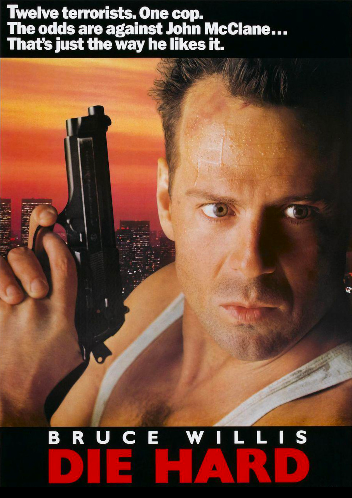I still haven’t watched it.
13. Just kidding…
The Farewell
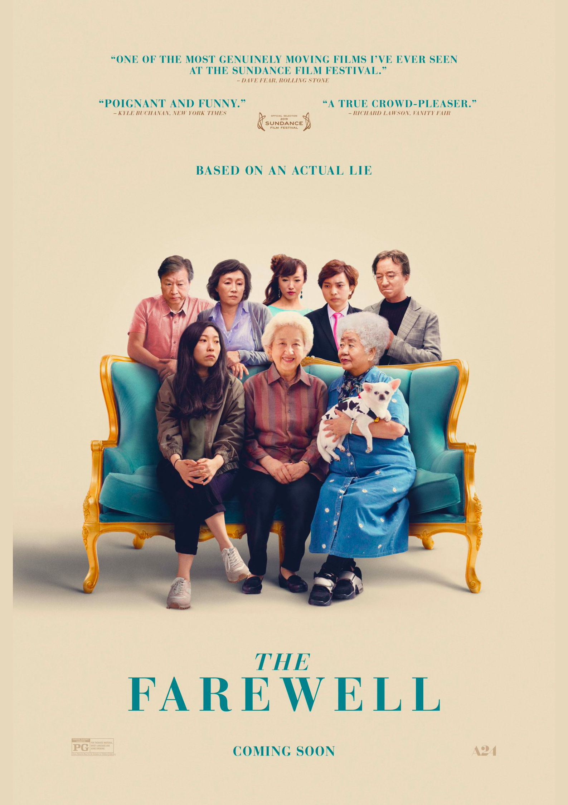Just kidding! No but seriously you should watch this film, it made me ball my eyes out. It follows a grandma and her children. I can’t say anymore because you’ll get spoiled but please it’s so good.
14. Just kiddinggg
Seven
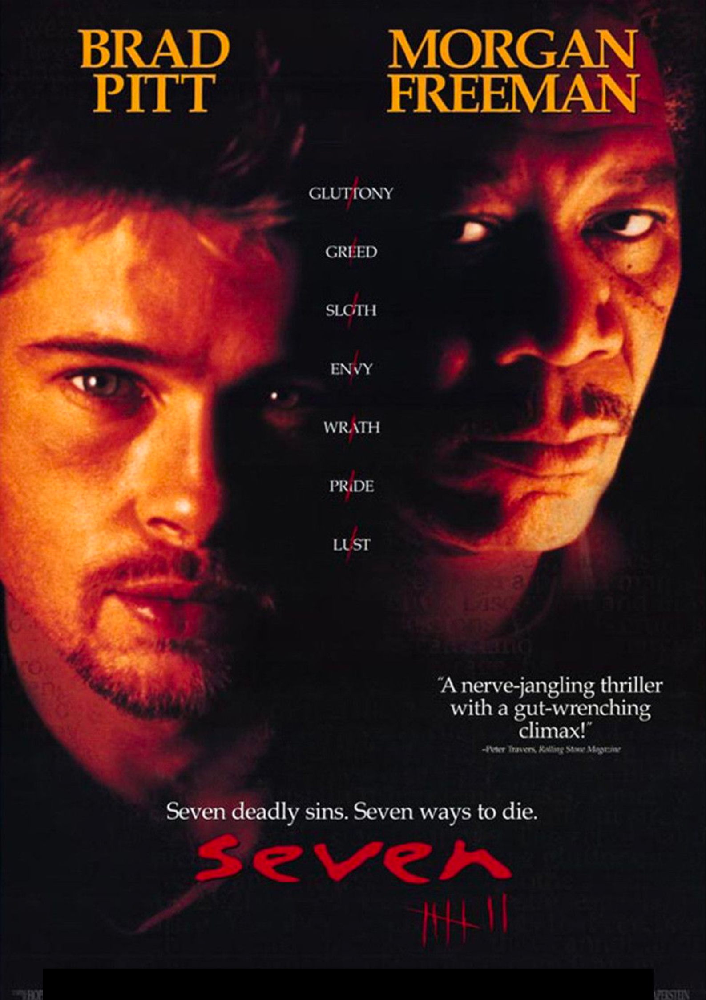I kind of associate Seven as an angry film. THIS IS NOT BAD! I just think the energy and build up of the movie is amazing and the ending is basically a huge argument. When I watched this film, I was so amazed at how compelling and gross but cool it was lol. Kevin Spacey really plays his character well…
14. More!
Fight Club

Let’s make a Fight Club. I’ll be Brad Pitt.
15. Now
Everything Everywhere All At Once

What comes next? We’ll never know…
All I know is that I’d like to spend everything everywhere all at once with you :)
This film is the best thing I have ever seen in my entire lifetime which is not long because I am young but anyways…
The comedy, the story, the relationship between immigrant mother and daughter. UGH, I can’t get enough and I’ll cry every single time. Let’s also watch this again thanks.
16. The Future
Glass Onion: A Knives Out Mystery
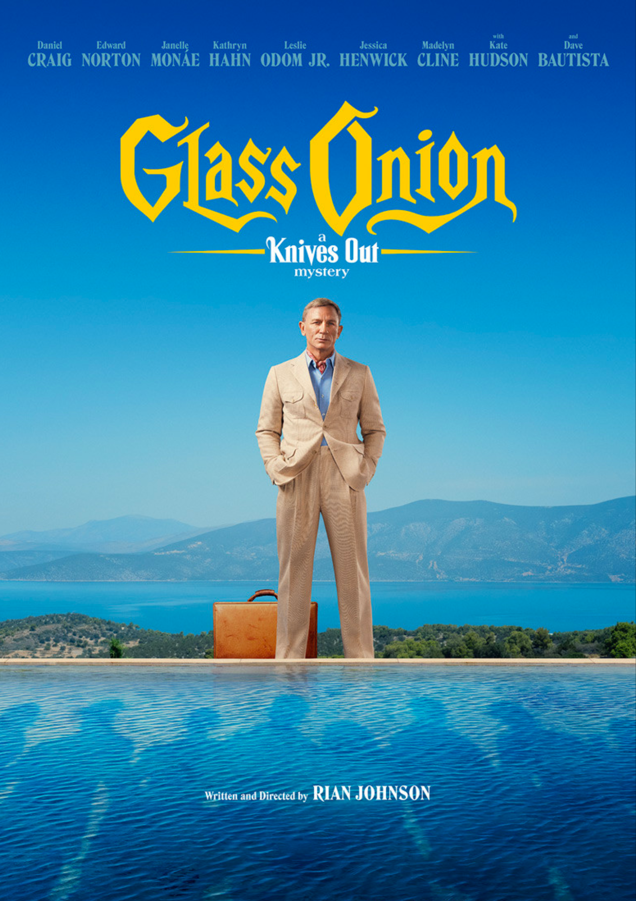Please, let’s watch this. I would very much like to see it in cinemas.
16. The Future pt.2
Ip-Man 4

What even happened? We kind of just stopped watching the series after the last one since it was so bad. BUT, we need to finish the franchise.